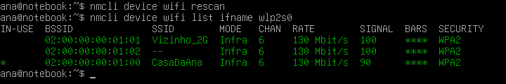
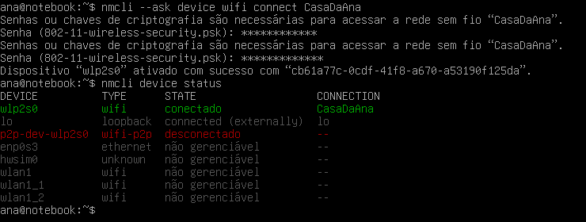
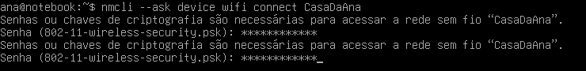
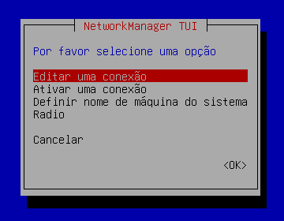
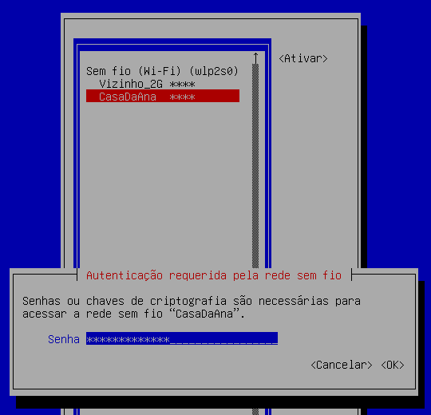
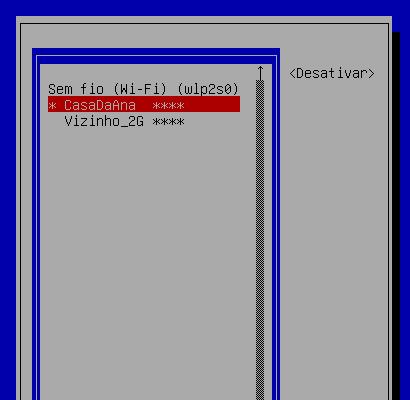

Debian Wi-Fi
Nem todo computador tem cabo de rede: notebooks, e muitos desktops, vivem no Wi-Fi. No Debian, o jeito de conectar depende de como o sistema foi instalado. Num desktop, quem cuida do Wi-Fi é o NetworkManager, e você conversa com ele pelo ícone de rede, pelo nmcli ou pelo nmtui. Num servidor sem desktop, o NetworkManager nem existe: o Wi-Fi fica escrito no arquivo /etc/network/interfaces. Esta aula ensina os dois caminhos, do primeiro comando até a senha errada.
- Descobrir quem cuida do Wi-Fi no seu Debian (NetworkManager ou ifupdown).
- Ver se o Wi-Fi está ligado, procurar redes e conectar com o
nmcli, pedindo a senha com--ask. - Reconhecer a mensagem de senha errada e sair da armadilha do perfil salvo com a senha errada.
- Gerenciar conexões salvas (
show,up,down,delete), redes ocultas e usar o menunmtui. - Configurar o Wi-Fi de um servidor no
/etc/network/interfacescomwpa-ssid,wpa-pskewpa_passphrase, e ligá-lo comifup.
Todas as saídas e telas foram geradas num Debian 13 real, a máquina virtual do guia. Como ela não tem placa Wi-Fi de verdade, o Wi-Fi foi feito com placas Wi-Fi virtuais do próprio kernel: uma faz o papel da placa do notebook (wlp2s0) e outra faz o papel do roteador da casa (rede CasaDaAna). Por isso algumas listas mostram placas a mais e endereços MAC começando com 02:00:00. Tudo isso está explicado em Como o laboratório foi feito. Problemas de placa (Wi-Fi que não aparece, bloqueado, firmware) estão na aula seguinte, Wi-Fi que Não Funciona.
Quem cuida do Wi-Fi no seu Debian?
Conectar no Wi-Fi envolve três peças. Saber quem é quem ajuda a entender as mensagens de erro:
| Peça | O que faz | Programa no Debian |
|---|---|---|
| Placa Wi-Fi | O rádio. Precisa de driver e, quase sempre, de firmware (veja Wi-Fi que Não Funciona). | O kernel |
| "Entrar" na rede | Acha a rede pelo nome, prova que sabe a senha (WPA2/WPA3) e mantém a conexão. | wpa_supplicant (pacote wpasupplicant) |
| Endereço IP | Depois de entrar na rede, pede um endereço ao roteador (DHCP). | NetworkManager (no desktop) ou dhcpcd (no servidor) |
Quem dá as ordens para essas peças é o "gerenciador" de rede, o mesmo da aula Configurar a Rede:
| Tipo de instalação | Quem cuida do Wi-Fi | Como você conecta | Nesta aula |
|---|---|---|---|
| Desktop (GNOME, KDE, Xfce…) | NetworkManager | Ícone de rede, nmcli ou nmtui | Parte 1 |
| Servidor ou instalação mínima | ifupdown + wpa_supplicant + dhcpcd | Editando o /etc/network/interfaces | Parte 2 |
Num Debian instalado sem desktop, o NetworkManager não vem. A máquina de laboratório do guia é assim:
#> systemctl is-active networking NetworkManager active « o ifupdown cuida da rede inactive « o NetworkManager não está rodando #> nmcli device bash: nmcli: comando não encontrado « nem está instalado
Na mesma instalação mínima também faltam wpasupplicant, iw e rfkill. Os dois primeiros o instalador só coloca se a instalação foi feita pelo Wi-Fi (veja Instalação). Se você vai usar Wi-Fi num servidor instalado por cabo, instale-os antes de tirar o cabo: apt install wpasupplicant iw rfkill.
Parte 1: no desktop, com o NetworkManager
No GNOME, o caminho mais curto é o canto superior direito da tela: clique nos ícones, abra Wi-Fi, escolha a rede e digite a senha. O resto desta parte faz o mesmo pelo terminal, o que serve para entender o que o ícone faz, para resolver problemas e para máquinas sem tela gráfica funcionando.
Antes, dois nomes que o nmcli usa o tempo todo:
| Termo | O que é | Exemplo |
|---|---|---|
| device (dispositivo) | A placa de rede, física. É o nome que aparece no ip a. | wlp2s0 |
| connection (conexão, ou perfil) | Uma configuração salva: "a rede CasaDaAna, com esta senha, pegando IP automático". Uma placa pode ter várias conexões salvas e usa uma de cada vez. | CasaDaAna |
| SSID | O nome da rede Wi-Fi, como aparece na lista. Maiúsculas e minúsculas contam. | CasaDaAna |
Passo 1: o Wi-Fi está ligado? nmcli radio
- nmcli
- (NetworkManager command line interface) A ferramenta de linha de comando do NetworkManager.
- radio
- Mostra (ou muda) os "rádios": Wi-Fi e banda larga móvel (WWAN).
$ nmcli radio WIFI-HW WIFI WWAN-HW WWAN habilitado habilitado missing habilitado
| Coluna | O que quer dizer | Se não estiver habilitado |
|---|---|---|
WIFI-HW | A chave de hardware do Wi-Fi (botão, tecla de modo avião). | desabilitado: só a chave física ou a tecla religam. Veja rfkill. |
WIFI | O Wi-Fi ligado pelo software. | desabilitado: ligue com nmcli radio wifi on. |
WWAN-HW / WWAN | O mesmo para modem 4G (Celular e Modem 4G). | missing ("ausente") = não há modem. Normal. |
Para desligar e ligar só o Wi-Fi (é o "modo avião" do Wi-Fi):
$ nmcli radio wifi off $ nmcli radio WIFI-HW WIFI WWAN-HW WWAN habilitado desabilitado missing habilitado « o Wi-Fi foi desligado pelo software $ nmcli radio wifi on
Como quase todo comando que muda algo, nmcli radio wifi off e on não mostram nada quando dão certo (código de saída 0).
Passo 2: qual é a placa? nmcli device
nmcli device (ou nmcli device status, que é a mesma coisa) lista as placas que o NetworkManager conhece:
$ nmcli device DEVICE TYPE STATE CONNECTION wlp2s0 wifi desconectado -- « a placa Wi-Fi do notebook lo loopback connected (externally) lo p2p-dev-wlp2s0 wifi-p2p desconectado -- « parte da mesma placa (Wi-Fi Direct) enp1s0 ethernet não gerenciável -- « o cabo, configurado no /etc/network/interfaces hwsim0 unknown não gerenciável -- « só no laboratório wlan1 wifi não gerenciável -- « só no laboratório: o "roteador" wlan1_1 wifi não gerenciável -- « só no laboratório wlan1_2 wifi não gerenciável -- « só no laboratório
Num notebook comum você veria só as quatro primeiras linhas. As colunas:
| Coluna | O que quer dizer |
|---|---|
DEVICE | O nome da placa. Placas Wi-Fi começam com wl (wireless): wlp2s0 é uma placa interna; adaptadores USB costumam se chamar wlx + o endereço MAC. |
TYPE | wifi, ethernet (cabo), gsm (modem), loopback… |
STATE | O estado (tabela abaixo). |
CONNECTION | A conexão salva que está em uso; -- = nenhuma. |
STATE | O que quer dizer |
|---|---|
conectado | Tudo certo: está na rede e tem endereço. |
desconectado | Pronta, mas sem rede. É onde você começa. |
conectando (configurando) | Entrando na rede ou esperando o endereço. Espere alguns segundos e repita. |
não disponível | A placa existe, mas não pode ser usada: Wi-Fi desligado (nmcli radio wifi off ou modo avião). Veja rfkill. |
não gerenciável | O NetworkManager não toca nessa placa, porque ela está no /etc/network/interfaces (veja o conflito). |
Repare que algumas palavras ficam em inglês, como connected (externally): é assim mesmo no Debian 13 (falta tradução).
Passo 3: procurar redes, nmcli device wifi list
- nmcli device wifi
- Comandos de Wi-Fi da placa.
- list
- Lista as redes que a placa está "ouvindo".
$ nmcli device wifi list
IN-USE BSSID SSID MODE CHAN RATE SIGNAL BARS SECURITY
02:00:00:00:01:00 CasaDaAna Infra 6 130 Mbit/s 100 ▂▄▆█ WPA2 « a sua rede
02:00:00:00:01:01 Vizinho_2G Infra 6 130 Mbit/s 100 ▂▄▆█ WPA2
02:00:00:00:01:02 -- Infra 6 130 Mbit/s 100 ▂▄▆█ WPA2 « rede oculta
IN-USE BSSID SSID MODE CHAN RATE SIGNAL BARS SECURITY « tabelas vazias: as placas do "roteador",
IN-USE BSSID SSID MODE CHAN RATE SIGNAL BARS SECURITY « que só existem no laboratório
IN-USE BSSID SSID MODE CHAN RATE SIGNAL BARS SECURITY
O nmcli faz uma tabela para cada placa Wi-Fi. No seu notebook, que tem uma placa só, aparece só a primeira. Para pedir a lista de uma placa específica, acrescente ifname wlp2s0 (interface name): nmcli device wifi list ifname wlp2s0.
| Coluna | O que quer dizer |
|---|---|
IN-USE | Um * marca a rede em que você está conectado. |
BSSID | O endereço MAC da antena do roteador. Uma casa com repetidor tem a mesma rede (mesmo SSID) com dois BSSID. |
SSID | O nome da rede. -- = rede oculta: ela existe, mas não divulga o nome (veja Rede oculta). |
MODE | Infra (infraestrutura) = uma rede com roteador, o caso normal. |
CHAN | O canal. De 1 a 13 é a faixa de 2,4 GHz; 36 ou mais é a faixa de 5 GHz. |
RATE | A velocidade máxima anunciada. |
SIGNAL e BARS | A força do sinal, de 0 a 100, e em "barrinhas". Abaixo de 30, a conexão pode falhar. |
SECURITY | WPA2, WPA3 ou WPA1 WPA2 = rede com senha; vazio = rede aberta; 802.1X = rede de empresa ou universidade (usuário e senha). |
A lista é guardada por alguns segundos. Se a sua rede não aparece, mande procurar de novo com rescan: ele não mostra nada (código 0), e a procura acontece por trás; espere uns 3 segundos e liste outra vez.
$ nmcli device wifi rescan $ nmcli device wifi list ifname wlp2s0

CasaDaAna (o * na coluna IN-USE). Sem interface gráfica, as barras de sinal viram asteriscos.Passo 4: conectar, pedindo a senha (--ask)
- nmcli
- O programa.
- --ask
- "Pergunte": se faltar alguma informação (a senha), o
nmclipergunta no terminal, sem mostrar o que você digita. Vem antes do resto. - device wifi connect
- Conectar numa rede Wi-Fi.
- CasaDaAna
- O SSID, exatamente como na lista. Se tiver espaço, use aspas:
"Casa da Ana".
$ nmcli --ask device wifi connect CasaDaAna Senhas ou chaves de criptografia são necessárias para acessar a rede sem fio “CasaDaAna”. Senha (802-11-wireless-security.psk): ************* « cada letra vira um * Dispositivo “wlp2s0” ativado com sucesso com “cb61a77c-0cdf-41f8-a670-a53190f125da”.
Senha (802-11-wireless-security.psk):é o nome técnico do campo da senha (pre-shared key, "chave pré-compartilhada": a senha que você e o roteador já sabem).ativado com sucesso com “cb61…”: conectou. O número comprido é o identificador (UUID) da conexão que onmcliacabou de criar e salvar com o nomeCasaDaAna.
O código de saída é 0. Confira com nmcli device: a wlp2s0 passa a conectado, na conexão CasaDaAna. A tela real do console, com uma senha errada antes da certa (explicada logo abaixo):

--ask, uma tentativa com a senha errada, a certa e o nmcli device status mostrando conectado. (No laboratório a placa de cabo se chama enp0s3.)A forma com a senha no comando
Também dá para escrever a senha no próprio comando, com a palavra password. É a forma que aparece em muitos tutoriais:
$ nmcli device wifi connect CasaDaAna password 'senhadaana123' Dispositivo “wlp2s0” ativado com sucesso com “cfbf2ccf-b5a5-4051-adba-0a2e69b59339”.
Com password, a senha fica gravada no histórico do bash (~/.bash_history) e aparece na tela. Prefira --ask. Use aspas simples se a senha tiver símbolos como $, ! ou espaço.
Passo 5: e se a senha estiver errada?
Com --ask, o nmcli simplesmente pergunta de novo. A pergunta volta com a senha anterior já preenchida (os asteriscos): apague com Backspace e digite com calma. Para desistir, Ctrl+C.

--ask: a mesma pergunta volta, já preenchida com a senha anterior.Com password no comando, não há segunda chance. Saída real, com a senha errada:
$ nmcli device wifi connect CasaDaAna password 'senhaerrada1' Senhas ou chaves de criptografia são necessárias para acessar a rede sem fio “CasaDaAna”. Aviso: senha para “802-11-wireless-security.psk” não fornecida em “passwd-file” e nmcli não pode solicitar sem a opção “--ask”. Error: Connection activation failed: Segredos foram requisitados, mas não fornecidos. $ echo $? 4
Linha por linha: o roteador recusou a senha, o NetworkManager pediu outra ("segredos foram requisitados"), e o nmcli não podia perguntar porque você não usou --ask. O código 4 quer dizer "a ativação da conexão falhou". Nada na mensagem diz "senha errada", mas é isso.
Quer ter certeza? O kernel registra cada tentativa. As últimas linhas do dmesg (as mensagens do kernel; precisa de root) na tentativa acima:
#> dmesg | grep wlp2s0 … [ 725.015927] wlp2s0: authenticate with 02:00:00:00:01:00 (local address=02:00:00:00:00:00) [ 725.015938] wlp2s0: send auth to 02:00:00:00:01:00 (try 1/3) [ 725.017446] wlp2s0: authenticated « a placa achou o roteador [ 725.021504] wlp2s0: associate with 02:00:00:00:01:00 (try 1/3) [ 725.023375] wlp2s0: RX AssocResp from 02:00:00:00:01:00 (capab=0x411 status=0 aid=1) [ 725.023426] wlp2s0: associated « e entrou na fila dele [ 729.078473] wlp2s0: deauthenticated from 02:00:00:00:01:00 (Reason: 15=4WAY_HANDSHAKE_TIMEOUT) « a senha não bateu
4WAY_HANDSHAKE_TIMEOUT é o "aperto de mão em 4 etapas" do WPA2, em que os dois lados provam que sabem a mesma senha. Ele não terminou: a senha não confere.
A armadilha: a conexão foi salva com a senha errada
Mesmo falhando, o nmcli salva a conexão, com a senha errada dentro. Na tentativa seguinte, com a senha certa, aparece uma mensagem que confunde qualquer um:
$ nmcli connection show NAME UUID TYPE DEVICE lo 6f86b425-b1c4-4790-a45f-92c6cdc03e70 loopback lo CasaDaAna 1dce7779-cebc-46ac-8d5c-463dfb016e53 wifi -- « salva, mas sem uso $ nmcli device wifi connect CasaDaAna password 'senhadaana123' Erro: 802-11-wireless-security.key-mgmt: propriedade está faltando. $ echo $? 1
A senha estava certa; o que atrapalha é a conexão velha com o mesmo nome. A saída é apagar a conexão salva e conectar de novo:
$ nmcli connection delete CasaDaAna A conexão “CasaDaAna” (1dce7779-cebc-46ac-8d5c-463dfb016e53) foi excluída com sucesso. $ nmcli --ask device wifi connect CasaDaAna Senhas ou chaves de criptografia são necessárias para acessar a rede sem fio “CasaDaAna”. Senha (802-11-wireless-security.psk): ************* Dispositivo “wlp2s0” ativado com sucesso com “cfbf2ccf-b5a5-4051-adba-0a2e69b59339”.
Outra forma, sem apagar: trocar só a senha da conexão salva e ativá-la:
$ nmcli connection modify CasaDaAna wifi-sec.psk 'senhadaana123' $ nmcli connection up CasaDaAna
Passo 6: conferir a conexão
Três jeitos de confirmar que deu certo, do mais curto ao mais completo:
$ nmcli device wifi list ifname wlp2s0
IN-USE BSSID SSID MODE CHAN RATE SIGNAL BARS SECURITY
02:00:00:00:01:01 Vizinho_2G Infra 6 130 Mbit/s 100 ▂▄▆█ WPA2
02:00:00:00:01:02 -- Infra 6 130 Mbit/s 100 ▂▄▆█ WPA2
* 02:00:00:00:01:00 CasaDaAna Infra 6 130 Mbit/s 90 ▂▄▆█ WPA2 « o * marca a sua
$ ip -br a show wlp2s0
wlp2s0 UP 192.168.50.144/24 fe80::1002:690b:ebfc:c37e/64 « tem endereço IPv4
$ nmcli -f GENERAL.STATE,GENERAL.CONNECTION,IP4.ADDRESS,IP4.GATEWAY,IP4.DNS device show wlp2s0
GENERAL.STATE: 100 (conectado)
GENERAL.CONNECTION: CasaDaAna
IP4.ADDRESS[1]: 192.168.50.144/24 « o endereço que o roteador emprestou
IP4.GATEWAY: 192.168.50.1 « o roteador
IP4.DNS[1]: 10.0.2.3 « o DNS que o roteador informou
(-f, de fields, escolhe quais campos mostrar; sem ele, o device show mostra dezenas de linhas.) Por fim, teste a internet com ping -c 3 debian.org (veja ip, ping, ss). No laboratório o "roteador" não leva à internet (veja por quê); no seu computador, o ping responde.
Conexões salvas: show, up, down e delete
Cada rede em que você entra vira uma conexão salva, que liga sozinha na próxima vez que a rede estiver por perto (autoconnect). Para listar:
$ nmcli connection show NAME UUID TYPE DEVICE CasaDaAna cfbf2ccf-b5a5-4051-adba-0a2e69b59339 wifi wlp2s0 « salva e em uso lo 6f86b425-b1c4-4790-a45f-92c6cdc03e70 loopback lo
| Coluna | O que quer dizer |
|---|---|
NAME | O nome da conexão. O nmcli usa o SSID como nome; você pode trocar. |
UUID | Um identificador único. Serve para diferenciar duas conexões com o mesmo nome. |
TYPE | wifi, ethernet, gsm… |
DEVICE | A placa que está usando a conexão agora; -- = salva, mas desligada. |
Desligar e religar uma conexão (útil quando o Wi-Fi "trava"), e apagar uma que você não quer mais:
$ nmcli connection down CasaDaAna Conexão “CasaDaAna” desativada com sucesso (caminho D-Bus ativo: /org/freedesktop/NetworkManager/ActiveConnection/5) $ nmcli connection up CasaDaAna Conexão ativada com sucesso (caminho D-Bus ativo: /org/freedesktop/NetworkManager/ActiveConnection/6) $ nmcli connection delete Escritorio Erro: Escritorio – perfil de conexão inexistente. « uma rede que nunca foi salva
O "caminho D-Bus" é um endereço interno do NetworkManager; pode ignorar. Depois de um down, a conexão não liga sozinha até o próximo up (ou até reiniciar). Para que uma rede nunca conecte sozinha: nmcli connection modify CasaDaAna connection.autoconnect no.
Onde a senha fica guardada
Cada conexão é um arquivo em /etc/NetworkManager/system-connections/, que só o root lê (permissão 600):
#> ls -l /etc/NetworkManager/system-connections/ total 4 -rw------- 1 root root 280 out 16 16:38 CasaDaAna.nmconnection
[connection] id=CasaDaAna uuid=1dce7779-cebc-46ac-8d5c-463dfb016e53 type=wifi interface-name=wlp2s0 [wifi] mode=infrastructure ssid=CasaDaAna [wifi-security] auth-alg=open key-mgmt=wpa-psk psk=senhaerrada1 [ipv4] method=auto [ipv6] addr-gen-mode=default method=auto [proxy]
Este é o arquivo da armadilha: repare na linha psk=senhaerrada1, a senha errada salva. key-mgmt=wpa-psk é o tipo de segurança (WPA com senha) e method=auto, o IP automático (DHCP).
Esqueceu a senha do Wi-Fi de casa e quer passá-la para uma visita? O NetworkManager mostra a senha da rede em uso:
$ nmcli device wifi show-password SSID: CasaDaAna Segurança: WPA Senha: senhadaana123
Num terminal de verdade (não num script), o nmcli desenha também um QR code, que o celular da visita lê pela câmera.
Rede oculta
Uma rede oculta não anuncia o nome: na lista ela aparece como -- (e no nmtui nem aparece). Para entrar, você precisa saber o nome exato. Use a palavra hidden yes ("oculta: sim"):
$ nmcli device wifi connect Escritorio password 'escritorio2026' hidden yes Dispositivo “wlp2s0” ativado com sucesso com “cab19378-21f8-41b4-9087-fbedcc773c23”.
(Com --ask no lugar de password, ele pergunta a senha, como antes.)
No laboratório, esse comando às vezes respondeu Erro: nenhuma rede com SSID “Escritorio” foi encontrada. (código 10) e funcionou na tentativa seguinte. Quando isso se repetir, crie a conexão "à mão" com connection add, que não depende da lista de redes:
- nmcli connection add
- Criar uma conexão nova.
- type wifi
- Do tipo Wi-Fi.
- ifname wlp2s0
- Para a placa
wlp2s0. - con-name Escritorio
- O nome da conexão (como vai aparecer no
connection show). - ssid Escritorio
- O nome da rede.
- 802-11-wireless.hidden yes
- A rede é oculta: procure por ela pelo nome.
- wifi-sec.key-mgmt wpa-psk
- Segurança: WPA com senha (
wifi-secé o apelido de802-11-wireless-security). - wifi-sec.psk 'senha'
- A senha.
$ nmcli connection add type wifi ifname wlp2s0 con-name Escritorio ssid Escritorio 802-11-wireless.hidden yes wifi-sec.key-mgmt wpa-psk wifi-sec.psk 'escritorio2026' A conexão “Escritorio” (9cdd1584-41a5-4a65-81ef-4a6c3907aff9) foi adicionada com sucesso. $ nmcli connection up Escritorio
nmtui: o mesmo, com menus
O nmtui (NetworkManager text user interface) é um programa de menus dentro do terminal. Faz o mesmo que o nmcli, sem decorar comandos. Bom para quem está num console sem interface gráfica. Navegue com as setas, Tab e Enter; Esc volta.
- Digite
nmtuie aperte Enter. No menu, desça até Ativar uma conexão e aperte Enter.
O menu principal do nmtui. "Radio" liga e desliga o Wi-Fi, como onmcli radio. - Aparece a lista Sem fio (Wi-Fi) (wlp2s0) com as redes e o sinal em asteriscos. Desça até a sua rede e aperte Enter (é o mesmo que o botão
<Ativar>).As redes encontradas. A rede oculta não aparece aqui. - Digite a senha na janela Autenticação requerida pela rede sem fio e aperte Enter.

A senha também aparece como asteriscos. - Conectado, a rede ganha um
*e o botão vira<Desativar>. Saia com Esc duas vezes.
Conectado: o *na frente deCasaDaAna.
Se a senha estiver errada, a janela da senha volta. Em Editar uma conexão você muda a senha, o IP fixo e o DNS de uma conexão salva.
No desktop, a usuária que está sentada na máquina (sessão local) pode procurar redes e conectar sem senha de root. Pelo SSH, não: o Debian só libera essas ações para sessões locais ativas. Pelo SSH, a ana recebe:
$ nmcli device wifi rescan Erro: org.freedesktop.NetworkManager.wifi.scan request failed: not authorized.
(not authorized = "não autorizado".) Pelo SSH, faça como root (su -). Para salvar conexões, o Debian libera sem pedir senha quem está numa sessão local e nos grupos netdev ou sudo (regra em /usr/share/polkit-1/rules.d/org.freedesktop.NetworkManager.rules); a ana está no netdev (veja id).
Parte 2: servidor sem desktop, pelo /etc/network/interfaces
Num servidor, o Wi-Fi é configurado como o cabo (aula Configurar a Rede): um bloco no /etc/network/interfaces. A diferença são duas linhas a mais, com o nome da rede e a senha, que o ifupdown entrega ao wpa_supplicant.
Se você instalou o Debian sem desktop conectado no Wi-Fi, o instalador já fez tudo isto: instalou wpasupplicant, iw e wireless-tools e escreveu o bloco do Wi-Fi no /etc/network/interfaces, com a permissão 600 (só o root lê, porque a senha está ali). O Wi-Fi já liga no boot. Veja o arquivo com su - e cat /etc/network/interfaces.
O instalador grava o bloco neste formato (linhas com recuo de Tab, e dois espaços depois de wpa-psk; o formato vem do código do instalador; o nome da rede e a senha são os do exemplo):
# The primary network interface allow-hotplug wlp2s0 iface wlp2s0 inet dhcp wpa-ssid CasaDaAna wpa-psk senhadaana123
| Linha | Significado |
|---|---|
allow-hotplug wlp2s0 | Liga a placa quando o sistema a detectar (no boot ou quando um adaptador USB for conectado). |
iface wlp2s0 inet dhcp | A placa pega o IPv4 por DHCP, do roteador. Igual ao cabo. |
wpa-ssid CasaDaAna | O nome da rede. Se tiver espaços, escreva sem aspas: wpa-ssid Casa da Ana. |
wpa-psk senhadaana123 | A senha da rede, em texto puro (ou o "hash" do wpa_passphrase, logo abaixo). |
As linhas wpa-* são lidas pelo script /etc/network/if-pre-up.d/wpasupplicant, do pacote wpasupplicant: antes de ligar a placa, ele inicia um wpa_supplicant só para ela. Sem esse pacote, as linhas são ignoradas.
Configurar à mão, passo a passo
Para não mexer no arquivo principal (onde está o cabo), use um arquivo separado em /etc/network/interfaces.d/: o interfaces já o inclui pela linha source /etc/network/interfaces.d/*.
- Descubra o nome da placa com
ip -br link(veja Wi-Fi que Não Funciona se não aparecer nenhumawl…). - Gere a senha protegida com
wpa_passphrase(próxima seção). - Crie o arquivo com
nano /etc/network/interfaces.d/wifi:# Wi-Fi da casa allow-hotplug wlp2s0 iface wlp2s0 inet dhcp wpa-ssid CasaDaAna wpa-psk 24834ce1d9223fc80147c6d34ff9db4ba605567e69a87dac8c36c84f2d72eec1 - Feche o arquivo para os outros usuários:
chmod 600 /etc/network/interfaces.d/wifi. Sem isso, qualquer usuário lê a senha. - Confira o que o ifupdown entendeu, com
ifquery, e ligue comifup(próximas seções).
wpa_passphrase: não deixar a senha em texto puro
- wpa_passphrase
- Calcula a chave WPA de uma rede a partir do nome e da senha (fica em
/usr/bin; a usuária comum também pode rodar). - CasaDaAna
- O SSID. A chave depende dele: a mesma senha em outra rede dá outra chave.
- senhadaana123
- A senha. Se você omitir, ele lê a senha do teclado (e assim ela não fica no histórico).
#> wpa_passphrase CasaDaAna senhadaana123
network={
ssid="CasaDaAna"
#psk="senhadaana123" « a senha original, comentada
psk=24834ce1d9223fc80147c6d34ff9db4ba605567e69a87dac8c36c84f2d72eec1 « a chave: use esta
}
A saída está no formato do arquivo de configuração do wpa_supplicant. Do bloco, você só precisa do número da linha psk= (64 caracteres hexadecimais), que vai depois de wpa-psk. A linha com #psk= mostra a senha original: não a copie para lugar nenhum.
Quem lê o arquivo não descobre a sua senha, então ela continua segura se você a usa em outros lugares (o que não deveria). Mas a chave de 64 caracteres também entra na rede: para o roteador, ela vale tanto quanto a senha. Por isso o chmod 600 continua obrigatório.
Ligar e desligar: ifquery, ifup e ifdown
#> ifquery wlp2s0 wpa-ssid: CasaDaAna wpa-psk: 24834ce1d9223fc80147c6d34ff9db4ba605567e69a87dac8c36c84f2d72eec1 #> ifup wlp2s0 dhcpcd-10.1.0 starting DUID 00:01:00:01:32:64:24:8a:08:00:27:90:fb:de wlp2s0: waiting for carrier « esperando o wpa_supplicant entrar na rede wlp2s0: carrier acquired « entrou wlp2s0: connected to Access Point: CasaDaAna wlp2s0: IAID 00:00:00:00 wlp2s0: adding address fe80::be40:317a:8e0a:ae08 wlp2s0: soliciting a DHCP lease « pedindo um endereço ao roteador wlp2s0: soliciting an IPv6 router wlp2s0: offered 192.168.50.145 from 192.168.50.1 « o roteador ofereceu um wlp2s0: probing address 192.168.50.145/24 wlp2s0: leased 192.168.50.145 for 43200 seconds « emprestado por 12 horas wlp2s0: adding route to 192.168.50.0/24 wlp2s0: adding default route via 192.168.50.1 #> echo $? 0
As mensagens são do dhcpcd, em inglês. As importantes: carrier acquired ("sinal obtido": a senha foi aceita) e leased ("emprestado": ganhou endereço). Para conferir:
#> ifquery --state wlp2s0=wlp2s0 « o ifupdown ligou a placa lo=lo enp1s0=enp1s0 #> iw dev wlp2s0 link Connected to 02:00:00:00:01:00 (on wlp2s0) « conectado ao roteador (o BSSID) SSID: CasaDaAna freq: 2437.0 « 2437 MHz = canal 6, faixa de 2,4 GHz RX: 25131 bytes (253 packets) TX: 2672 bytes (22 packets) signal: -30 dBm « força do sinal (veja abaixo) rx bitrate: 39.0 MBit/s MCS 4 tx bitrate: 78.0 MBit/s MCS 12 bss flags: short-slot-time dtim period: 2 beacon int: 100 #> ifdown wlp2s0 sending signal ALRM to pid 3742 « avisa o dhcpcd para devolver o endereço waiting for pid 3742 to exit
O iw (wireless, pacote iw) mostra o estado do rádio. O sinal (signal) é medido em dBm, sempre negativo: mais perto de zero é melhor. Como referência: −30 excelente, −50 ótimo, −67 bom, −75 fraco, abaixo de −80 a conexão cai. No laboratório é −30 porque o "roteador" está na mesma máquina.
Com os dois ligados, quem tem a rota com menor métrica leva o tráfego. O dhcpcd soma 2000 à métrica do Wi-Fi, então o cabo ganha. No laboratório, ip r mostrou default via 10.0.2.2 dev enp0s3 … metric 1002 para o cabo e default via 192.168.50.1 dev wlp2s0 … metric 3006 para o Wi-Fi.
Não misture com o NetworkManager
Se o NetworkManager estiver instalado e a placa Wi-Fi também estiver no interfaces, os dois brigam pelo wpa_supplicant. Saída real, com o NetworkManager ainda controlando a wlp2s0:
#> ifup wlp2s0 wpa_supplicant: /usr/sbin/wpa_supplicant daemon failed to start run-parts: /etc/network/if-pre-up.d/wpasupplicant exited with return code 1 ifup: failed to bring up wlp2s0
("O wpa_supplicant não conseguiu iniciar"; "falhou ao ligar a wlp2s0".) O NetworkManager do Debian larga as placas descritas no interfaces, mas só depois de reiniciado (no laboratório, systemctl reload NetworkManager não bastou):
#> systemctl restart NetworkManager #> nmcli device status DEVICE TYPE STATE CONNECTION enp1s0 ethernet não gerenciável -- wlp2s0 wifi não gerenciável -- « agora é do ifupdown
A regra é a mesma do cabo: escolha um só. Com desktop, deixe o Wi-Fi com o NetworkManager e tire a placa do interfaces. Sem desktop, use o interfaces.
Formas diferentes de conectar no Wi-Fi: qual usar?
| Forma | Onde funciona | Permanente? | Quando usar |
|---|---|---|---|
| Ícone de rede (GNOME, KDE…) | Desktop | Sim | No dia a dia. |
nmcli --ask device wifi connect | Desktop (NetworkManager) | Sim (salva a conexão) | Pelo terminal, em scripts, para ver as mensagens de erro. |
nmtui | Desktop (NetworkManager) | Sim | Console sem interface gráfica, sem decorar comandos. |
/etc/network/interfaces + ifup | Servidor (ifupdown + wpasupplicant) | Sim | Servidor sem desktop, instalação mínima. |
| Instalar o NetworkManager no servidor | Servidor | Sim | Notebook usado como servidor que muda de rede com frequência: o nmcli lida melhor com várias redes salvas. Tire antes a placa do interfaces. |
Quando não funciona
$ nmcli device wifi connect CasaDaAna password 'senhaerrada1' … Error: Connection activation failed: Segredos foram requisitados, mas não fornecidos.
O que aconteceu: a senha está errada (o roteador pediu outra e o nmcli não podia perguntar).
Como confirmar: dmesg | grep wlp2s0 mostra 4WAY_HANDSHAKE_TIMEOUT.
Como resolver: nmcli connection delete CasaDaAna e conecte de novo com --ask. Confira Caps Lock, o layout do teclado e letras parecidas (l/1, O/0).
O que aconteceu: já existe uma conexão salva com o mesmo nome (normalmente de uma tentativa com a senha errada).
Como resolver: nmcli connection show para ver; nmcli connection delete CasaDaAna e conecte de novo, ou troque a senha com nmcli connection modify CasaDaAna wifi-sec.psk 'senha' e nmcli connection up CasaDaAna.
$ nmcli device wifi connect Escritorio password 'escritorio2026' Erro: nenhuma rede com SSID “Escritorio” foi encontrada.
O que aconteceu: a rede não está na lista: nome digitado diferente (maiúsculas contam), rede longe, rede só de 5 GHz numa placa de 2,4 GHz, ou rede oculta.
Como resolver: nmcli device wifi rescan, espere e liste de novo; copie o nome exatamente como aparece. Se for oculta, use hidden yes ou connection add (Rede oculta).
$ nmcli connection up Escritorio Erro: Ativação da conexão falhou: A configuração IP não pode estar reservada (nenhum endereço disponível, timeout, etc) Dica: use “journalctl -xe NM_CONNECTION=9cdd1584-41a5-4a65-81ef-4a6c3907aff9 + NM_DEVICE=wlp2s0” para obter mais detalhes.
O que aconteceu: a senha foi aceita (o log diz Connected to wireless network "Escritorio"), mas ninguém respondeu ao pedido de endereço (DHCP) em 45 segundos. No laboratório, foi um "roteador" sem DHCP ligado.
Como resolver: reinicie o roteador; confira se outros aparelhos conseguem entrar; em redes de empresa, pergunte se há liberação por MAC. Mais em Wi-Fi que Não Funciona.
$ nmcli connection up CasaDaAna Erro: Ativação da conexão falhou: No suitable device found for this connection (device wlp2s0 not available because device is not available).
O que aconteceu: a placa está não disponível: o Wi-Fi está desligado (nmcli radio wifi off, tecla de modo avião).
Como resolver: nmcli radio wifi on; se não voltar, veja rfkill.
O que aconteceu: o Debian só deixa a usuária comum mexer no Wi-Fi numa sessão local.
Como resolver: pelo SSH, use su - e rode o nmcli como root.
#> ifup wlp2s0 dhcpcd-10.1.0 starting DUID 00:01:00:01:32:64:24:8a:08:00:27:90:fb:de wlp2s0: waiting for carrier wlp2s0: carrier lost wlp2s0: carrier lost timed out « 30 segundos sem conseguir entrar na rede #> echo $? 0 « e mesmo assim devolve 0!
O que aconteceu: o wpa_supplicant não conseguiu entrar na rede. O motivo aparece no log dele:
#> journalctl -t wpa_supplicant -o cat | tail … wlp2s0: Associated with 02:00:00:00:01:00 wlp2s0: CTRL-EVENT-SUBNET-STATUS-UPDATE status=0 wlp2s0: CTRL-EVENT-DISCONNECTED bssid=02:00:00:00:01:00 reason=15 wlp2s0: WPA: 4-Way Handshake failed - pre-shared key may be incorrect « "a senha pode estar errada" wlp2s0: CTRL-EVENT-SSID-TEMP-DISABLED id=0 ssid="CasaDaAna" auth_failures=2 duration=25 reason=WRONG_KEY BSSID 02:00:00:00:01:00 ignore list count incremented to 2, ignoring for 10 seconds
(-o cat mostra só as mensagens, sem data e nome da máquina.)
Como resolver: corrija o wpa-psk (gere de novo com wpa_passphrase, com o nome exato da rede). Atenção: mesmo com timed out, o ifupdown considera a placa ligada (ela aparece no ifquery --state). Antes de tentar de novo, rode ifdown wlp2s0; senão o ifup responde que ela já está configurada.
O que aconteceu: o NetworkManager está usando a placa (veja Não misture).
Como resolver: systemctl restart NetworkManager para ele largar a placa descrita no interfaces, ou tire a placa do interfaces e use o nmcli.
O que aconteceu: problema de placa: bloqueio de rádio, driver ou firmware.
Como resolver: siga o roteiro de Wi-Fi que Não Funciona. Enquanto isso, use cabo ou o celular por USB.
Como o laboratório foi feito
Transparência: a VM do guia não tem placa Wi-Fi de verdade. Para mostrar saídas reais (e não inventadas), o Debian 13 do laboratório foi montado assim:
- O kernel tem um módulo de teste, o
mac80211_hwsim, que cria placas Wi-Fi virtuais que conversam entre si por um "ar" simulado. Foram criadas duas, commodprobe mac80211_hwsim radios=2(ohwsim0é o "monitor" desse ar). - A primeira faz o papel da placa do notebook. O kernel a chamou de
wlan0; ela foi renomeada parawlp2s0(com um arquivo.linkdo systemd), para ficar com o nome que você vai ver num notebook de verdade. - A segunda,
wlan1, é o roteador: o programahostapd(ponto de acesso) anuncia três redes WPA2, aCasaDaAna(senhasenhadaana123), aVizinho_2Ge a ocultaEscritorio(placaswlan1_1ewlan1_2), e odnsmasqempresta endereços192.168.50.x. Essas placas foram marcadas como "não gerenciáveis" para o NetworkManager não mexer nelas. - O
nmcli, onmtui, owpa_supplicant, odhcpcde o ifupdown são os do Debian 13 (NetworkManager 1.52.1, wpasupplicant 2.10), sem modificação. As telas são capturas do console da VM.
O que isso muda em relação ao seu computador:
- As listas mostram placas a mais (
wlan1,wlan1_1,wlan1_2,hwsim0) e tabelas vazias nonmcli device wifi list. No seu, só a sua placa. - Os endereços MAC começam com
02:00:00(placas virtuais). E o sinal é sempre ótimo (100, −30 dBm), porque o "roteador" está dentro da mesma máquina. - O "roteador" não leva à internet: o Linux não manda pelo "ar" simulado um pacote destinado a ele mesmo. O
ping -I wlp2s0no laboratório deuDestination Host Unreachable. No seu computador, depois deconectado, opingresponde. - A placa de cabo da VM se chama
enp0s3; nos textos do guia ela aparece comoenp1s0, como nas outras aulas.
Referência
| Comando | Faz |
|---|---|
nmcli radio | Mostra se o Wi-Fi está ligado (hardware e software). |
nmcli radio wifi on / off | Liga / desliga o Wi-Fi. |
nmcli device | Placas e estado de cada uma. |
nmcli device wifi list [ifname wlp2s0] | Redes ao alcance. |
nmcli device wifi rescan | Procura redes de novo. |
nmcli --ask device wifi connect REDE | Conecta, perguntando a senha. |
nmcli device wifi connect REDE password 'senha' | Conecta com a senha no comando (fica no histórico). |
… hidden yes | A rede é oculta. |
nmcli device wifi show-password | Mostra a senha da rede em uso (e um QR code). |
nmcli connection show | Conexões salvas. |
nmcli connection up / down / delete NOME | Liga / desliga / apaga uma conexão salva. |
nmcli connection modify NOME wifi-sec.psk 'senha' | Troca a senha salva. |
nmtui | Menus para conectar e editar conexões. |
wpa_passphrase REDE [senha] | Gera a chave para o wpa-psk. |
ifquery wlp2s0 / ifup wlp2s0 / ifdown wlp2s0 | Servidor: mostra a configuração / liga / desliga. |
iw dev wlp2s0 link | Em que rede a placa está e a força do sinal. |
Exercícios
1. Conectar sem a senha no histórico
Complete para o nmcli perguntar a senha da rede CasaDaAna:
2. Depois de uma tentativa com a senha errada, você roda o comando com a senha certa e recebe key-mgmt: propriedade está faltando. O que fazer?
3. Wi-Fi no servidor
Complete a linha do /etc/network/interfaces que diz o nome da rede:
4. Senha protegida
Qual comando gera a chave de 64 caracteres para colocar no wpa-psk?
5. No nmcli device, a placa Wi-Fi aparece como não disponível. O que é mais provável?
6. Num servidor sem desktop, onde fica a configuração do Wi-Fi?
Resumo
- Desktop: NetworkManager (
nmcli,nmtui, ícone). Servidor:/etc/network/interfacescomwpa-ssidewpa-psk, mais o pacotewpasupplicant. - Roteiro no desktop:
nmcli radio→nmcli device→nmcli device wifi list→nmcli --ask device wifi connect REDE. - Senha errada: "Segredos foram requisitados…". A conexão fica salva com a senha errada; apague-a (
nmcli connection delete) antes de tentar de novo. - Conexões salvas ligam sozinhas;
nmcli connection show/up/down/deleteas controlam. - No servidor, use
wpa_passphraseechmod 600; ligue comifup wlp2s0; depois de umtimed out, rodeifdownantes do próximoifup. - Não configure a mesma placa no
interfacese no NetworkManager.